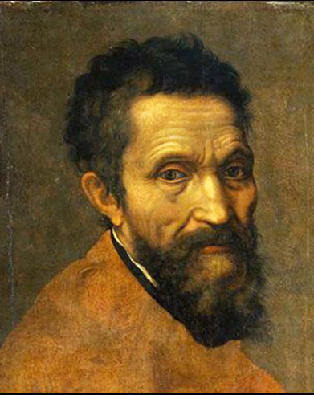

米開朗基羅·博那羅蒂
Michelangelo di Lodovico Buonarroti Simoni
1475年3月6日出生於義大利佛羅倫斯柏里斯鎮，是義大利文藝復興時期偉大的繪畫家、雕塑家、 建築師和詩人，文藝復興時期雕塑藝術最高峰的代表。他一生追求藝術的完美，堅持自己的藝術 思路，與拉斐爾和達文西並稱為文藝復興後三傑。他的雕刻作品「大衛像」舉世聞名，最著名的 繪畫作品是梵蒂岡西斯廷禮拜堂的《創世紀》天頂畫和壁畫《最後的審判》。他的風格影響了 幾乎三個世紀的藝術家。 原文網址：https://kknews.cc/culture/aryzl3g.html